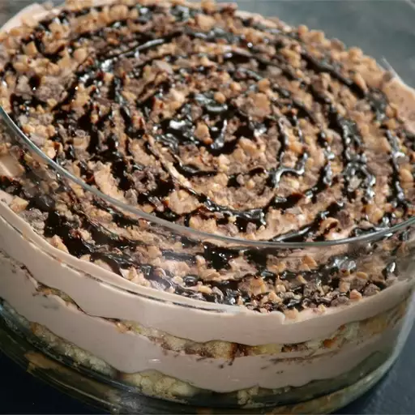

Recipes for onigari

Onigiri Onigiri (Japanese Rice Balls)
This easy onigiri recipe is also fun to make! These rice balls are a staple of Japanese lunchboxes (bento). You can put almost anything in these rice balls; try substituting grilled salmon, pickled plums, beef, pork, turkey, or tuna with mayonnaise.
Ingredients
- 4 cups uncooked short-grain white rice
- 5 ½ cups water, divided
- ¼ teaspoon salt
- ¼ cup bonito shavings (dry fish flakes)
- 2 sheets nori (dry seaweed), cut into 1/2-inch strips
- 2 tablespoons sesame seeds
Steps
- Wash rice in a mesh strainer until water runs clear. Combine washed rice and 4 1/2 cups water in a saucepan. Bring to a boil over high heat, stirring occasionally. Reduce heat to low; cover, and simmer rice until water is absorbed, 15 to 20 minutes. Let rice rest for 15 minutes to continue to steam and become tender. Allow cooked rice to cool.
- Combine remaining 1 cup water with salt in a small bowl; use to dampen hands before handling rice. Divide cooked rice into 8 equal portions. Use one portion of rice for each onigiri.
- Divide one portion of rice in two. Create a dimple in rice and fill with a heaping teaspoon of bonito flakes. Cover with remaining portion of rice and press lightly to enclose filling inside rice ball. Gently press rice to shape into a triangle; wrap with a strip of nori and sprinkle with sesame seeds. Repeat with remaining portions of rice.
Recipes for Tiramisu Toffee Dessert

Toffee Tiramisu
This is a nice version of the popular Italian pick-me-up dessert. The toffee candy in this recipe adds a delightful crunchiness to the smooth creamy whipped cream quality of an already perfect dessert.
Ingredients
- 1 (10.75 ounce) package frozen prepared pound cake, thawed and cut into 9 slices
- ¾ cup strong brewed coffee
- 1 (8 ounce) package cream cheese
- 1 cup white sugar
- ½ cup chocolate syrup
- 2 cups heavy whipping cream
- 2 (1.4 ounce) bars chocolate covered English toffee, chopped
Steps
- Arrange cake slices on bottom of a rectangular 11x7 inch baking dish, cutting cake slices if necessary to fit the bottom of the dish. Drizzle coffee over cake.
- Beat cream cheese, sugar, and chocolate syrup, in a large bowl with an electric mixer on medium speed until smooth. Add heavy cream; beat on medium speed until light and fluffy. Spread over cake. Sprinkle with chocolate-covered toffee candy.
- Cover and refrigerate for at least 1 hour, but no longer than 24 hours, to set dessert and blend flavors.
Recipes for Two-Ingredient Pizza Dough

Two-Ingredient Pizza Dough
This 2-ingredient pizza dough is fast and easy to make and tastes great! Greek yogurt is the secret ingredient and baking the crust at a higher temperature is the key to making this the perfect pizza. It doesn't get any easier than this folks. Brush dough with olive oil, add your favorite toppings, and enjoy!
Ingredients
- 1 ½ cups self-rising flour, plus more for kneading
- 1 cup plain Greek yogurt
- cooking spray
Steps
- Gather all ingredients. Preheat the oven to 500 degrees F (260 degrees C).
- Mix flour and Greek yogurt together in a bowl to form a dough; transfer to a work surface floured with self-rising flour.
- Knead dough, adding more flour as needed to keep dough from being too sticky, about 8 to 10 minutes.
- Spray a 12-inch pizza pan with cooking spray and spread dough to the edges of the pan.
- Bake pizza crust in preheated oven for 5 to 7 minutes; add your favorite toppings and return to the preheated oven.
- Bake until crust is lightly browned, 5 to 7 minutes more.
- Enjoy!
Home